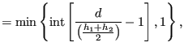

Next: newnodes.f Up: Mesh refining procedure Previous: START OF THE REFINEMENT Contents
An external edge i with length d and h-value at its nodes of and is divided into n(i)+1 edges satisfying:
| n(i) | (820) |
where int(x) is the integer smaller than or equal to the real number x. This creates at most 2 edges out of 1.